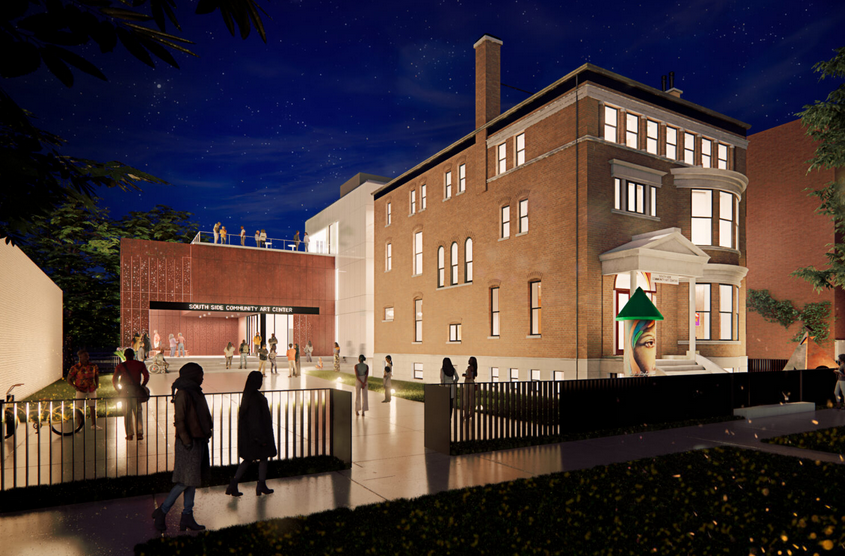

SATELLITE EVENT | DESIGN DIALOGUE: A RENEWED SOUTH SIDE COMMUNITY ART CENTER
Join us for a captivating look at the South Side Community Art Center as we embark on the biggest transformation in our storied 85-year history. _____
Presented by the Chicago Architecture Center, in conversation with the South Side Community Art Center
February 25, 2026
6:00–7:15 PM
Tickets: $10 General · $5 CAC & SSCAC Members · Free for Burnham Society
Chicago Architecture Center (Lecture Hall) | 111 E Wacker Drive _____
ABOUT THIS EVENT
Join the South Side Community Art Center at the Chicago Architecture Center for an in-depth conversation on the Center’s historic renewal and future vision.